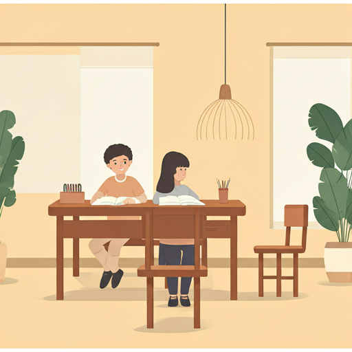

Educação para Todos
Oferecemos aulas de reforço escolar e atividades educativas para crianças e adolescentes em comunidades carentes.
Oferecemos aulas de reforço escolar e atividades educativas para crianças e adolescentes em comunidades carentes.
Distribuímos cestas básicas e refeições para famílias em situação de vulnerabilidade.
Realizamos campanhas de prevenção e oferecemos apoio a pessoas com problemas de saúde.
Descrição: Junte-se à nossa equipe e faça a
diferença na vida de muitas pessoas. Preencha o formulário de
voluntário e entraremos em contato.
Botão: Formulário de Voluntário
Sua doação é fundamental para continuarmos nossos projetos.
Você pode doar via PIX ou
transferência bancária.